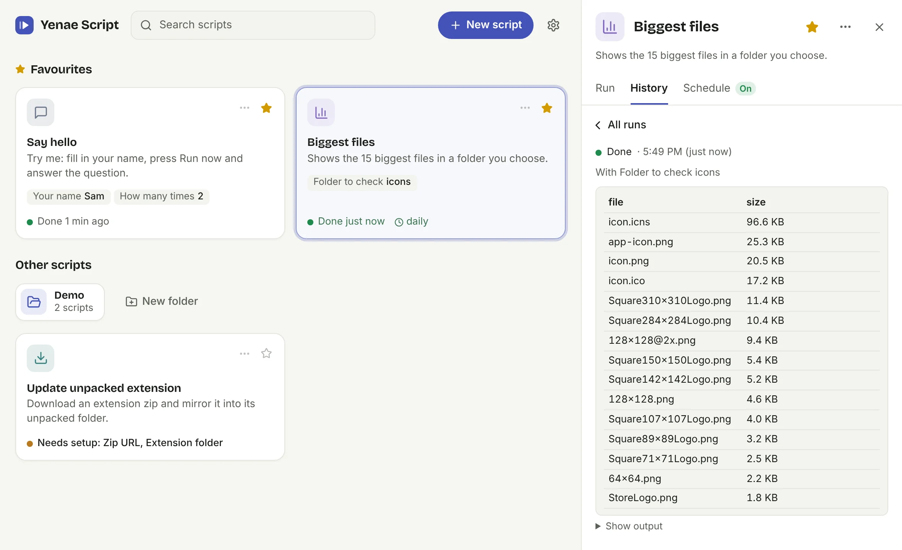

Pick a script, fill in its form, press Run. Let it run on a schedule, or have AI write a new one for you.
Download for Windows
Every script gets a simple form. It can ask you questions while it runs and shows its results as tables.
Turn on a schedule and it keeps running from the tray. If something needs you, the app says so in plain words.
Updates download quietly and install when nothing is running. If one goes wrong, the app goes back by itself.
Installing on Windows: Windows may say it protected your PC, because the installer isn't code-signed yet. Choose More info, then Run anyway. To uninstall, go to Settings → Apps → Installed apps.